IdeaWave
Journey through Brainstorming
A card-based ideation game made for nonexpert designers to make the brainstorming process fun and effective.
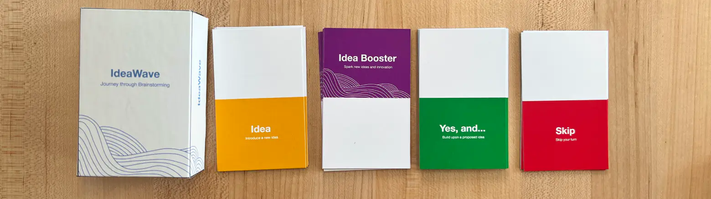
Fig 1: The components of the final product included a stock-paper printed deck of cards, laser-cut wooden box, and sticker covering.
My Role
Team Lead
Duration
8 weeks
Design Tools
1. Figma & FigJam
2. Adobe Illustrator
3. CAD
R&D Methods
1. Expert Interviews
2. Observations
3. Usability Testing
4. Expert Feedback
4. High Fidelity Design
5. Product Development
About IdeaWave
IdeaWave is a card game developed for design students and employees new to brainstorming. The game is optimized for a team of 5, who take turns playing their cards. These cards are randomly distributed among the players from 4 decks (see Figure 1), each serving a unique purpose.
The Problem
Based on our secondary research and ethnographic observations in a design class at Purdue, we identified the following challenges faced by design teams in the brainstorming process:
One Powerful Voice: All team members do not get an equal chance to speak up.
Evaluation Apprehension: The worry about being judged by others.
Free riding: Unequal participation in the groups' task.
Arriving at the solution
In Spring 2024, I served as an instructor for a 100-level undergraduate design course taken mostly by freshmen. I observed students did not know how to brainstorm. They fell victim to the challenges stated in the section above.
I wanted to solve this problem.
But how?
Finding the market gap
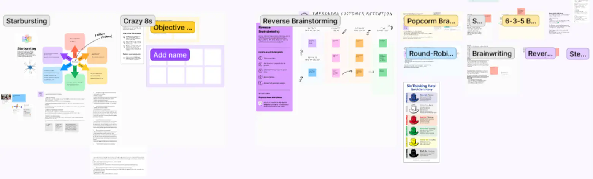
Fig 2: Understanding the frequently used brainstorming techniques.
We started off by conducting a thorough literature search to understand how the existing brainstorming techniques work (see Figure 2) and what brainstorming facilitation tools exist in the market.
We found 3 broad categories of brainstorming tools:
The gap
No intervention targets people who are new to brainstorming.
There does not exist a tool which teaches brainstorming.
The solutions do not make the process fun and interesting.
Understanding users
We engaged in ethnographic observations in my design class to explore student collaboration during brainstorming sessions. Additionally, we conducted 4 interviews with experts to gain insights into their experiences and challenges with brainstorming. Our findings revealed:
Time constraint on brainstorming session boost idea generation.
Not all students actively contribute to brainstorming.
Managing brainstorming in large groups is tricky.
Finalizing a solution
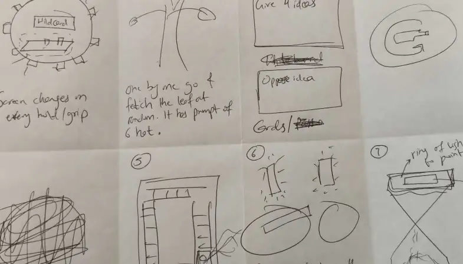
Fig 3: Ideating on potential solutions to solve brainstorming challenges using Crazy 8’s.
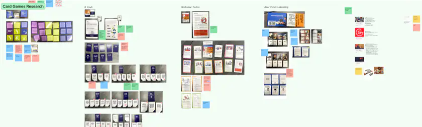
Fig 4: Compiling and understanding the existing ideation toolkits used by design teams.
We utilized the Crazy 8's technique (see Figure 3) to individually brainstorm eight potential solutions and unanimously decided to develop a a card-game.
We then thoroughly studied different phases of game development (see Figure 4), and analyzed the gameplay of various card games (including UNO and Exploding Kittens).
I created the initial draft of our ideation game, which was subsequently iterated to refine the final gameplay.
Refining the solution
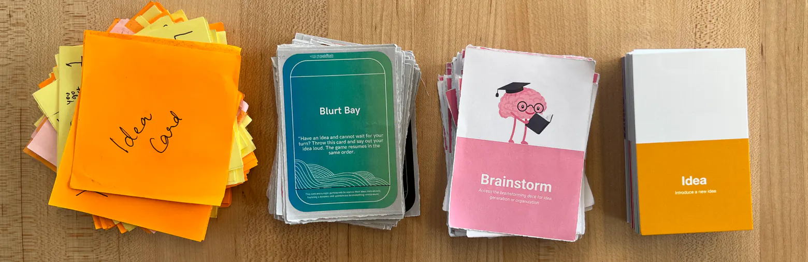
Fig 5: The evolution of prototype from left to right after every evaluation session.
Feedback from undergraduate students
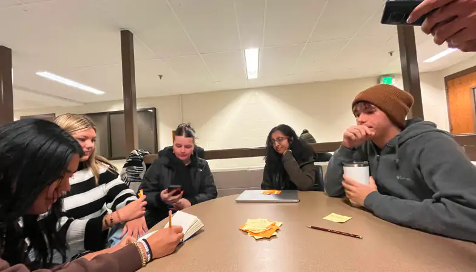
Fig 6: Design students brainstorming on organizing a grand festival for Purdue's graduating batch.
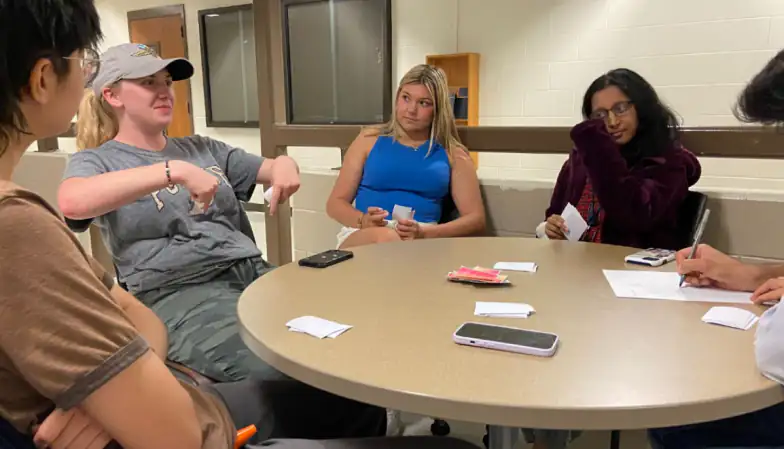
Fig 7: I am taking notes of my observations from the activity.
We conducted 2 separate sessions with students from my design class. After providing instructions on the basic gameplay, we assigned them a task and allowed them to explore the game independently. The students suggested:
adding a "satisfying" ending to the game. Initially, the game was designed to conclude when the team members mutually decided to stop playing.
implementing a structured system for taking turns. Initially, players took turns whenever they had an idea or critique to share.
Feedback from graduate students
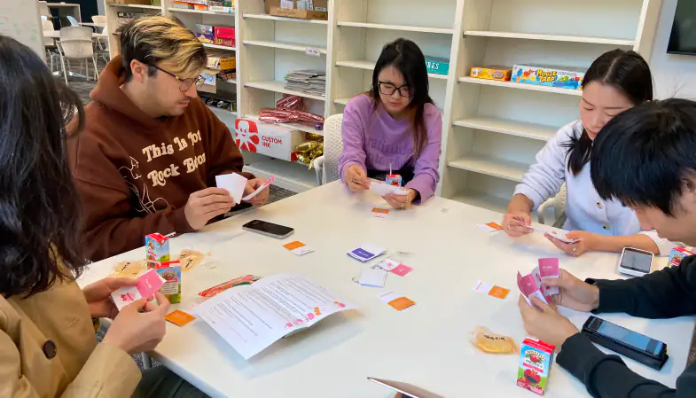
Fig 8: The students used the instruction sheet to understand the gameplay.
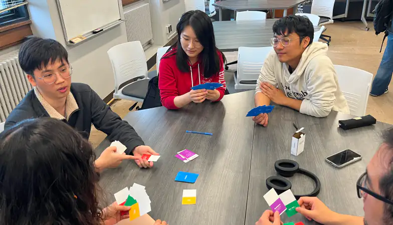
Fig 9: A student explaining their idea by playing the 'Blurt' card.
After incorporating feedback from undergraduate students, we tested the ideation cards with graduate students. This group pointed out:
clarity issues in the instructions written on the cards.
concerns about certain cards that seemed similar to others.
The solution - IdeaWave
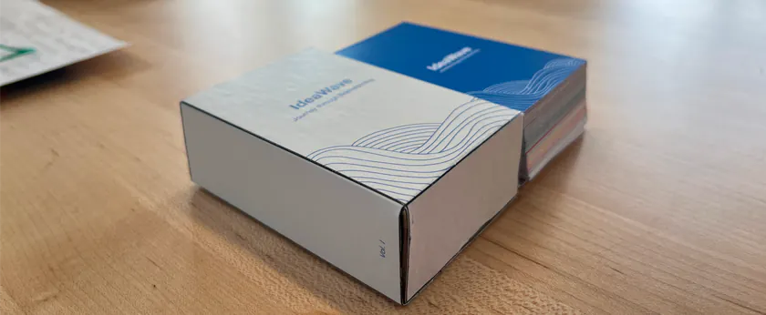
Fig 10: The deck of IdeaWave.
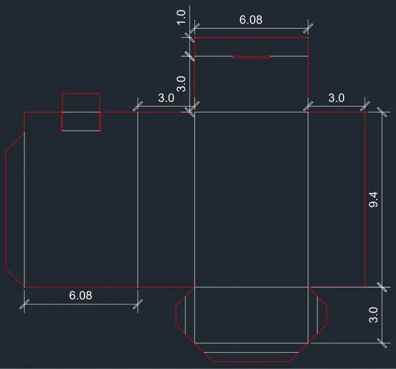
Fig 11: CAD model for the box. The model was used to laser cut the edges from a thin wooden sheet.
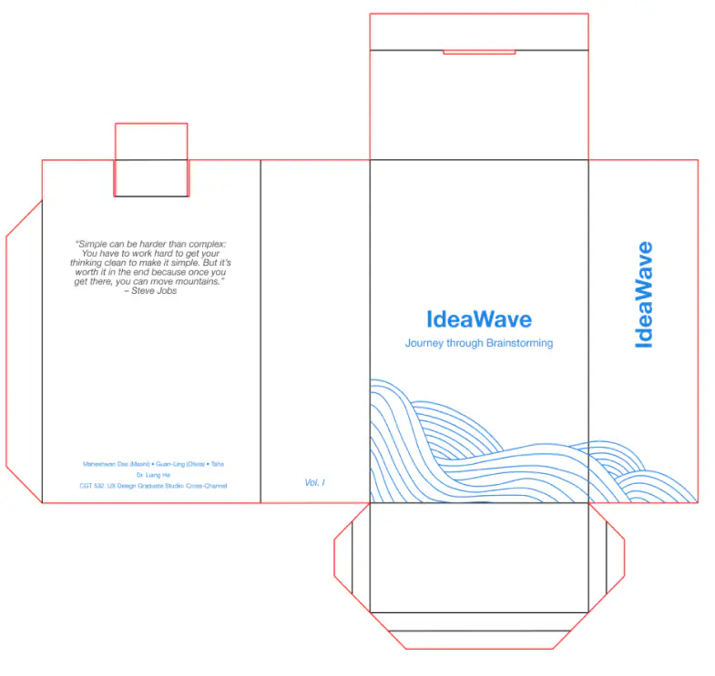
Fig 12: Sticker design for the box.
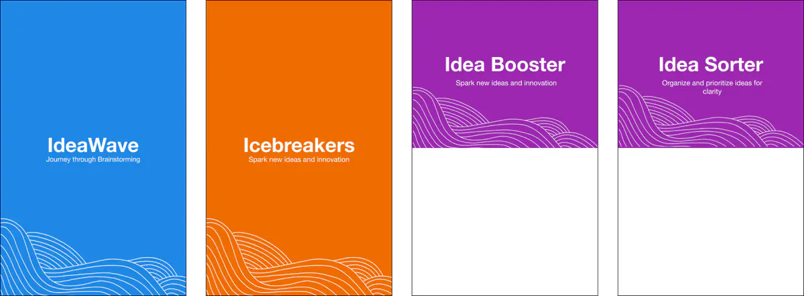
Fig 13: The backside of the IdeaWave cards.
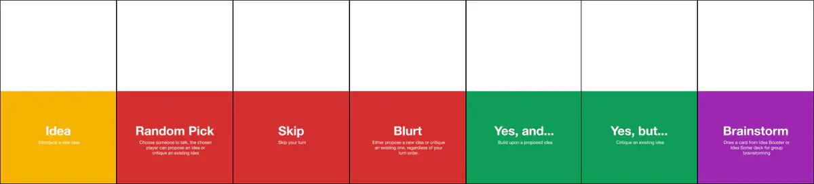
Fig 14: Yellow (Idea Card), Red (Wild Card), Green (Yes Card), Purple (Brainy Card).
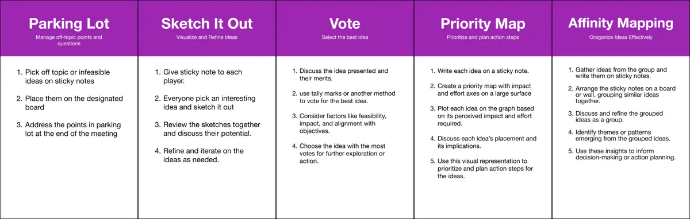
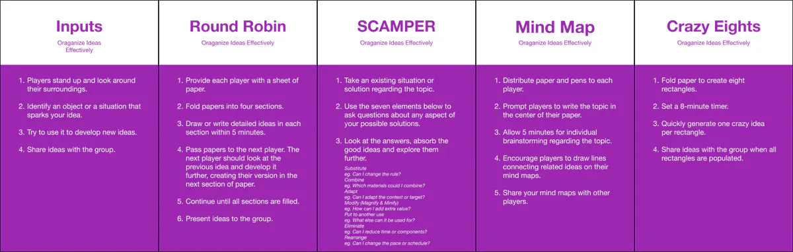
Fig 15: Idea Sorter Cards (Top) and Idea Booster Cards (Bottom).
Gameplay
Setup: Gather up to 5 players
Card distribution: Each player gets 1 Idea Card [Yellow], 4 Yes Cards [Green], and 2 Wild Cards [Red & Purple], totaling 7 cards each (see Figure 14). Shuffle the remaining cards into a draw pile. Place Icebreaker, Idea Booster, and Idea Sorter decks face down nearby.
Direction: Decide if play goes clockwise or anticlockwise.
Icebreakers: Kick off with an Icebreaker Card activity to warm up.
Game Start: Players take turns playing cards. They draw a card after each turn.
Idea Card (see Yellow card in Figure 14)
Idea: The player can propose a new idea.
Yes Cards (see Green cards in Figure 14)
Yes, and: The player can improve an existing idea.
Yes, but: The player can criticize an existing idea.
Wild Cards (see Red cards in Figure 14)
Random Pick: The player can ask another team member to speak on their behalf.
Blurt: The player does not need to wait for their turn to play this card and propose an idea.
Skip: The player can pass their turn.
Brainstorming Cards (see Figure 15)
Idea Booster: These cards involve traditional brainstorming techniques that help in idea generation.
Idea Sorter: These cards consist of techniques that help in theming and organizing the ideas
Brainy Card (see Purple card in Figure 14)
Brainstorm: When played, the player can pick a card randomly from the Brainstorming deck.
Game End: Game ends when any player has no cards left.
Reflection
IdeaWave was my first physical prototyping project. Initially, I had thought of coding an ideation device that could point toward team members in random so they could speak up. However, after desk research and ethnographic fieldwork, I changed the idea to a card game. Even the game went through a significant transformation where it evolved from a simple paper prototype to a complete product. My intention with the project was to make a marketable product which people would need. I still believe the game could be improved further through additional evaluation. It was fun to create a research-backed product.